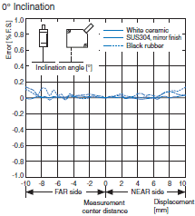
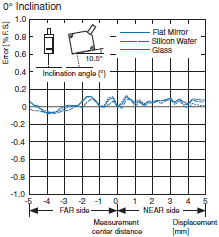
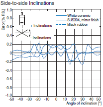
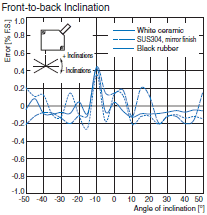

Displacement Sensors / Measurement Sensors
These Sensors can be used to measure distances and heights. A wide variety of models is available, including Laser Sensors, LED Sensors, Ultrasonic Sensors, Contact Sensors, Eddy Current Sensors, and more.
|
|
Features |
|
|
Classifications |
| Engineering Data | Further Information |
|
|
Troubleshooting |
Related Contents
- Displacement Sensors / Measurement Sensors
How to Interpret the Engineering Data
Optical Displacement Sensors
Diffuse-reflective Sensors and Regular-reflective Sensors
| Linearity Characteristic for Different Materials | |
| Example: Characteristic of the ZX2-LD50  | Example: Characteristic of the ZX2-LD50V  |
This graph shows the amount of error in the measurement distance based on the material of the object.
The error values shown are based on the values at the measurement center distance after tuning is performed.
Lower error values indicate more accurate measurement and detection. When selecting a model, choose one that provides an acceptable level of error for your application.
This characteristic applies when both the Sensor and the object are stationary.
The X-axis displacement indicates the measurement distance displayed on the Amplifier Unit. The measurement distance displayed on the Amplifier Unit is 0 at the measurement center distance, positive when in the near side of the measurement range, and negative when in the far side of the measurement range.
| Angle Characteristic | |
| Example: Characteristic of the ZX2-LD50  | Example: Characteristic of the ZX2-LD50  |
The angle characteristic plots the maximum value of the inclination of the workpiece and the error in the analog output within the measurement range.
At around -10.5° (the exact angle depends on the model), the amount of error increases due to regular-reflective light in relation to the optical axis of the Sensor. This affects Diffuse-reflective Sensors only.
Note:
The characteristic data are reference values. These characteristics depend on the detection conditions. Always test performance in your own operating environment. (For other details, refer to the datasheets and user's manual for each product.)